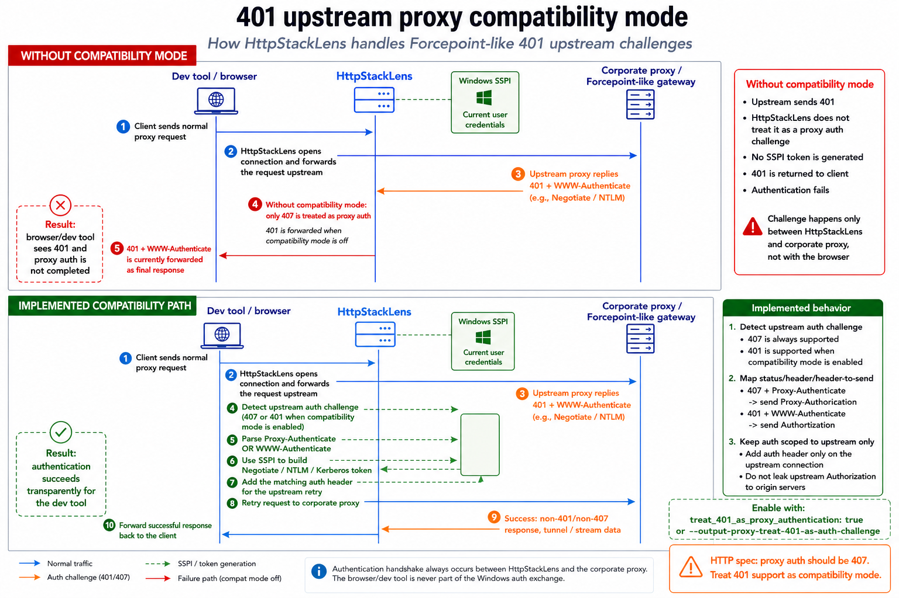
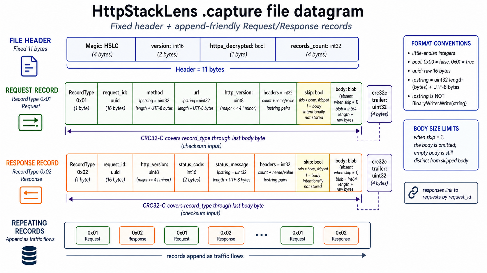

🔀 Forward proxy & CONNECT tunneling
At its core HttpStackLens is a forward proxy. It listens for incoming connections on a local
port (default 3128), handles HTTPS tunnels via the CONNECT method, and
forwards requests and responses bidirectionally. It parses both chunked and
Content-Length response bodies.
curl -x http://localhost:3128 http://example.comassets/screenshots/request-list.png🔓 HTTPS interception & decryption
When decrypt_https.enabled is on, HttpStackLens performs an opt-in local MITM.
A built-in certificate manager generates a debug root CA, installs it into the
Windows store / macOS keychain, and mints a per-domain certificate for each host
you visit. You can toggle decryption at runtime from the UI — no restart required.
MIME-type rules in the config decide which bodies are captured and up to what size, so you don't buffer a 4 GB video download just to read a JSON payload.
Every certificate this app creates carries a distinctive marker in its subject
(My Local CA for debugging HTTPS). Cleanup matches on that marker, so it only ever
removes certificates the app itself installed. See the
HTTPS decryption tutorial.
assets/screenshots/decrypted-body.png📡 Live Web UI
A WASM + Tailwind interface streams traffic over Server-Sent Events. It gives you a request list (newest first), detailed request/response inspection with timings, base64 body decoding with inline image previews, and a resizable, persistent detail pane in light or dark themes.
The UI is also the control panel: start/stop the proxy, manage recording, and edit upstream-proxy, body-capture and access-control settings without touching a config file or restarting the binary.
assets/screenshots/split-panes.png🏢 Upstream proxy authentication
HttpStackLens can forward everything to another proxy defined by output_proxy_uri.
On Windows it can inject your logged-in credentials using NTLM, Kerberos or Negotiate
(add_windows_authentication_to_output_proxy), and it ships a compatibility mode for
upstream proxies that authenticate via 407/401 challenges.
That combination lets it stand in for a dedicated local authentication proxy on a dev machine sitting behind an authenticated corporate proxy — see the corporate-proxy tutorial.

💾 Traffic capture & storage
Record sessions to a binary .capture format, browse saved captures in the UI, and
query traffic through a REST API (/api/requests/…). A bounded in-memory buffer keeps
the most recent requests even when storage is disabled.

.capture datagram layout.🛡️ Access control
Remote connections are restricted by default. Both the proxy and the Web UI support
loopback, LAN and allowlist modes, so you decide exactly who can reach them.
| Mode | Who can connect |
|---|---|
loopback | Only this machine (127.0.0.1 / ::1). The default. |
lan | Private/LAN address ranges. |
allowlist | Only the specific networks you list under networks. |
This is where allowlist shines. To inspect traffic from an app running in a
Docker container or on a phone / tablet, that client has to reach
the proxy from a non-loopback address — but opening it to the whole LAN is overkill. Instead, allow
just the source you care about: the container bridge network (e.g. 172.17.0.0/16) or
your device's IP (e.g. 192.168.1.42/32). Then point the container / device at your
machine's IP on :3128 and watch its requests live.
The proxy and the Web UI each have their own
access_control block in config.yaml (proxy.access_control and
webui.access_control) — they're configured independently. Opening one up doesn't touch
the other, so if you want to both send traffic and open the UI from another device, set the
mode on both. A common setup is an allowlist on the proxy while the UI
stays on loopback.
⚙️ Configuration & updates
A single config.yaml with sensible defaults is auto-generated on first run. The
binary reports its running version with a link to its commit, and can optionally check GitHub for
a newer release on startup (opt-in via updates.check_enabled).
proxy:
port: 3128
output_proxy_uri:
add_windows_authentication_to_output_proxy: false
webui:
port: 9000
decrypt_https:
enabled: false # intercept & decrypt HTTPS (generates + installs a per-domain cert)